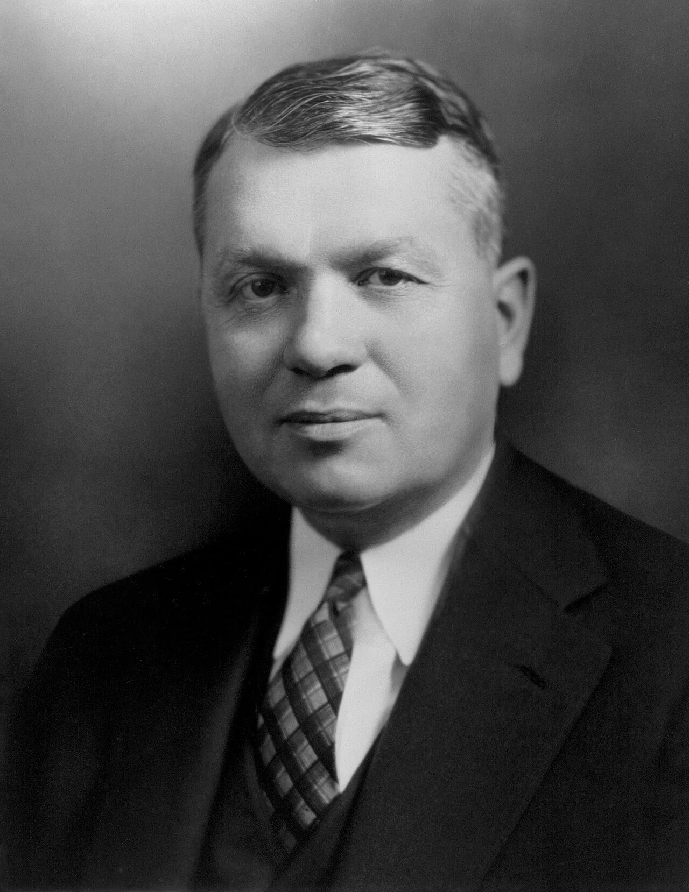
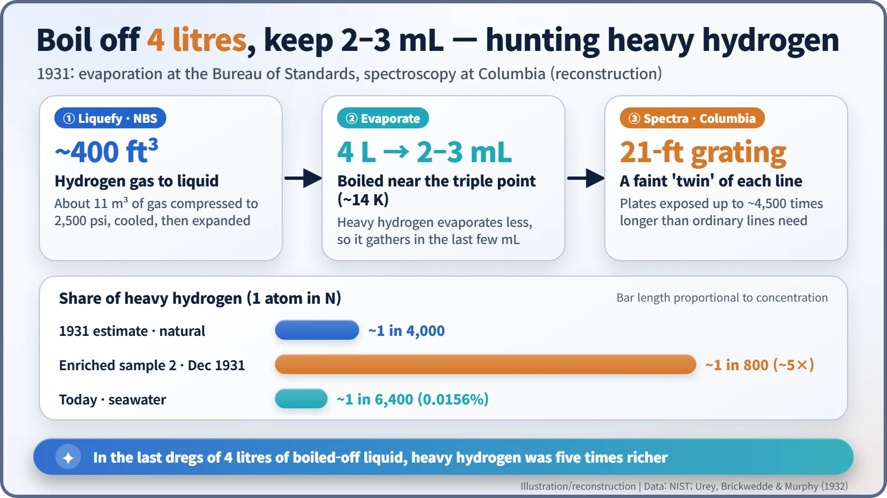
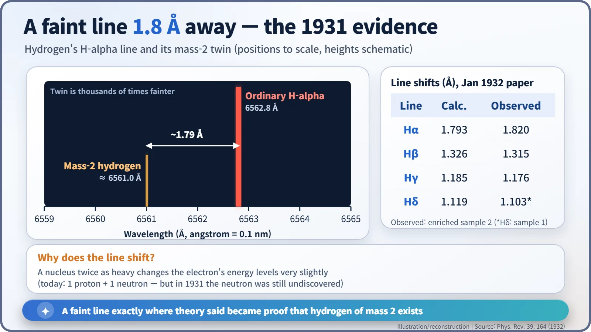
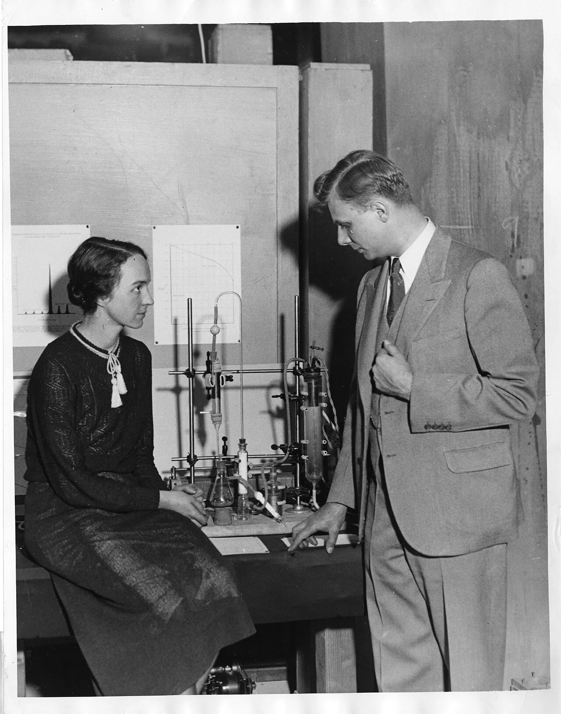

Nuclear History · 044
The Heavy Hydrogen Hiding in Your Water — Urey Discovers Deuterium (1931)
Four litres of liquid hydrogen were boiled away to leave a few millilitres, and a faint line 1.8 ångström from hydrogen's red line revealed an isotope twice as heavy.
About one hydrogen atom in 6,400 is roughly twice as heavy as the rest. In late 1931, Harold Urey at Columbia University, working with Ferdinand Brickwedde of the National Bureau of Standards and George Murphy, concentrated this heavy hydrogen by boiling away litres of liquid hydrogen and found its faint spectral lines exactly where theory predicted. The isotope, soon named deuterium, earned Urey the 1934 Nobel Prize in Chemistry.
A guest in your glass of water
If there is a glass of water on your desk, it contains a slightly unusual guest. Roughly one hydrogen atom in every 6,400 is about twice as heavy as the rest. That heavy hydrogen is called deuterium. It changes nothing you could taste or see, which is exactly why it stayed hidden for so long. It finally showed itself in late 1931, as a very faint line on a photographic plate in New York. [4]

A bookkeeping error in the atomic weights
By the late 1920s, chemists knew that many elements come in isotopes: atoms that behave the same chemically but differ in mass. Hydrogen, the simplest element of all, seemed to have only one.
In 1931, Raymond Birge and Donald Menzel at Berkeley noticed a tiny mismatch. The atomic weight of hydrogen measured by chemists did not quite agree with the value Francis Aston had obtained with his mass spectrograph. If about one hydrogen atom in 4,500 had a mass of 2, they argued, the numbers would balance. [1]
The man who took up the challenge was Harold C. Urey (1893–1981), a 38-year-old associate professor of chemistry at Columbia University. He had earned his doctorate in chemistry at Berkeley and spent a year at Niels Bohr's institute in Copenhagen, so he understood both the chemistry of isotopes and the physics of atomic spectra — exactly the combination this hunt would need. In the summer of 1931, in the words of a later National Bureau of Standards history, he "became convinced that an isotope of hydrogen of mass 2, though unknown, could be found." [2]
Boil off four litres, keep a few drops
The trouble was scarcity. With only one heavy atom in thousands, any signal would be swamped. Urey's plan was to concentrate it first. Heavier molecules evaporate a little less readily, so if you boil away a large amount of liquid hydrogen, the heavy kind should collect in the last dregs, much as a simmering sauce grows richer as it reduces.
That job went to Ferdinand G. Brickwedde (1903–1989), head of the low-temperature laboratory at the National Bureau of Standards (NBS) in Washington. He started with about 400 cubic feet (roughly 11 m³) of hydrogen gas, compressed it to 2,500 psi, precooled it with liquid nitrogen and expanded it to liquefy it. The first sample, the last few millilitres from six litres evaporated at atmospheric pressure, showed little or no enrichment. The likely reason, worked out later, was that the hydrogen had been made by electrolysis, which had already depleted the heavy isotope. For the next samples, Brickwedde evaporated four litres at a time near the triple point, at about 14 K and low pressure, keeping only the last 2–3 mL. In other words, several litres of liquid were sacrificed to obtain a sample smaller than a teaspoon. [2] [5]

A twin line, right where it should be
At Columbia, Urey and his colleague George M. Murphy (1903–1968) analysed the samples with a 21-foot diffraction grating. When hydrogen glows in an electric discharge it gives off light at sharp, characteristic colours, the Balmer lines. A nucleus twice as heavy should nudge each line very slightly. For the red H-alpha line, the calculated shift was 1.793 ångström (an ångström is a ten-millionth of a millimetre). [1]
They exposed their plates up to about 4,500 times longer than ordinary hydrogen lines required. A faint line appeared exactly where theory predicted, and it grew clearly stronger in the enriched samples. Brickwedde later recalled: "It was on Thanksgiving day in 1931 that Harold Clayton Urey found definitive evidence of a heavy isotope of hydrogen." That Thanksgiving fell on 26 November. [3]

On 5 December 1931 the three men sent a short letter, "A Hydrogen Isotope of Mass 2," to the Physical Review; it was published on 1 January 1932. An abstract was also presented at the American Physical Society meeting at Tulane University on 29–30 December. They estimated the natural abundance at "about 1:4000, or less". Today's measured value is about 1 in 6,400, or 0.0156 percent. [1] [3] [4]
| Sample or source | Heavy hydrogen share |
|---|---|
| Natural hydrogen, 1931 estimate | About 1 in 4,000 or less |
| Enriched sample 2 (Dec 1931) | About 1 in 800 (roughly five times richer) |
| Seawater, modern measurement | About 1 in 6,400 (0.0156%) |

A wrong prediction, a right discovery
There is a twist. Aston's hydrogen mass, the very number that had prompted Birge and Menzel, was later shown to be wrong. The prediction rested on a mistake, yet the discovery stood. Aston himself remarked, in effect, that he could hardly regret an error that had encouraged the search, and Brickwedde wrote that the errors had played a positively helpful role. [3] [5]
Another remarkable point: the neutron had not yet been discovered. Today we describe the deuterium nucleus as one proton plus one neutron, but that explanation only became possible a few months later, when James Chadwick identified the neutron in February 1932.
A name, a prize and a future role
Urey soon named the isotope deuterium, from the Greek deuteros, "second." Some British scientists, Ernest Rutherford among them, preferred "diplogen," from the Greek for "double," but Urey's name stuck. In 1933 his former teacher Gilbert N. Lewis prepared the first samples of pure heavy water (D₂O), and in 1934 Urey received the Nobel Prize in Chemistry "for his discovery of heavy hydrogen." He reportedly skipped the Stockholm ceremony to be home for the birth of his daughter. [4] [5]
Heavy water would return to the story of nuclear energy. It slows neutrons down while absorbing very few of them, which later made it a valuable moderator in reactors. That one-in-6,400 guest in your glass was about to step onto a much bigger stage.